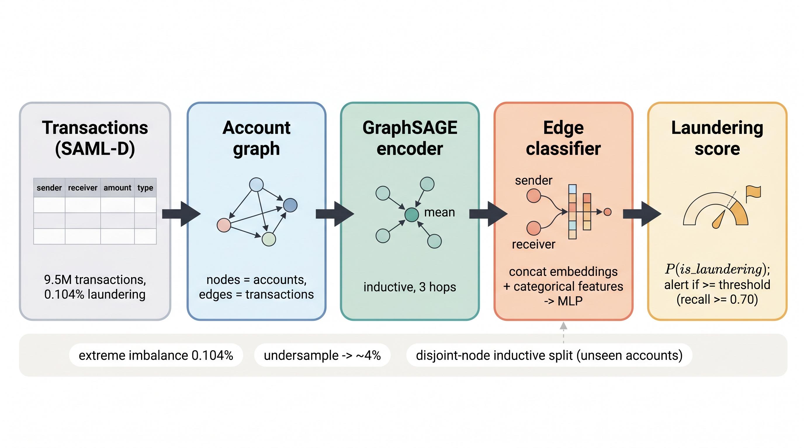
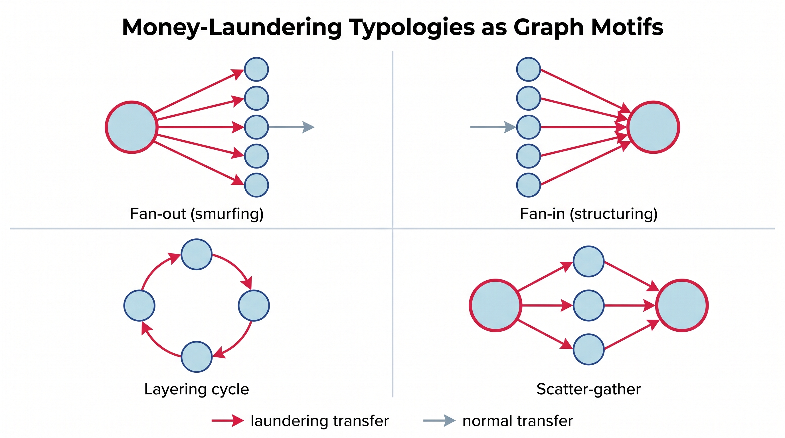
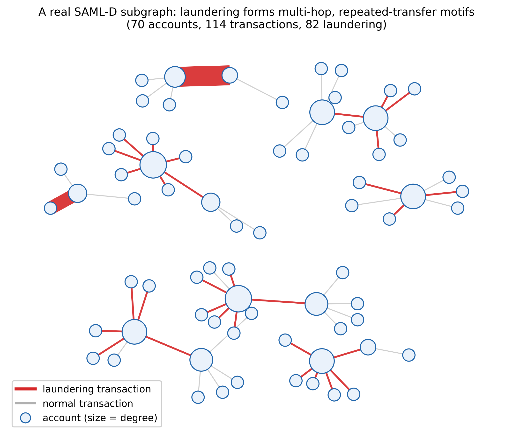
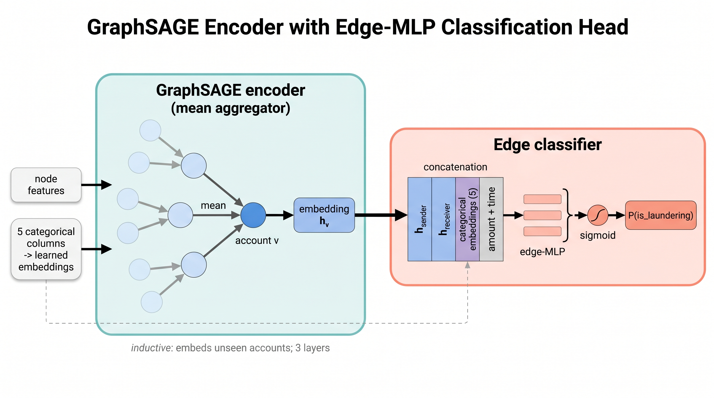
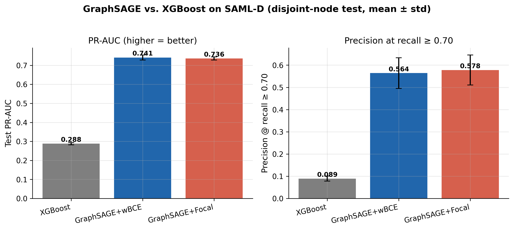
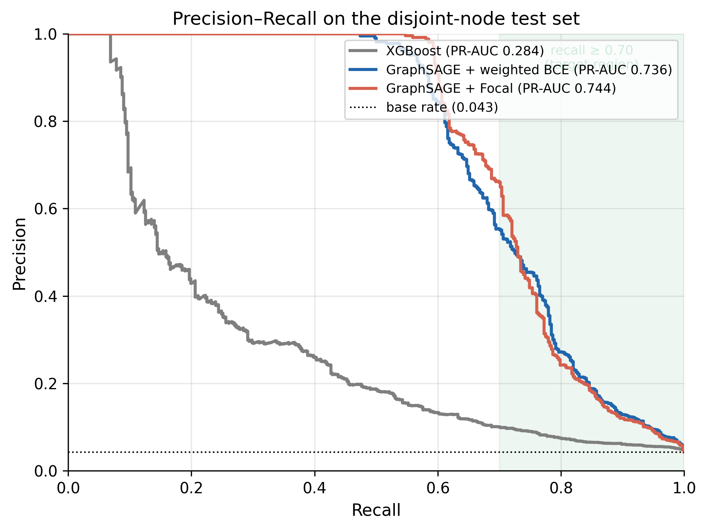
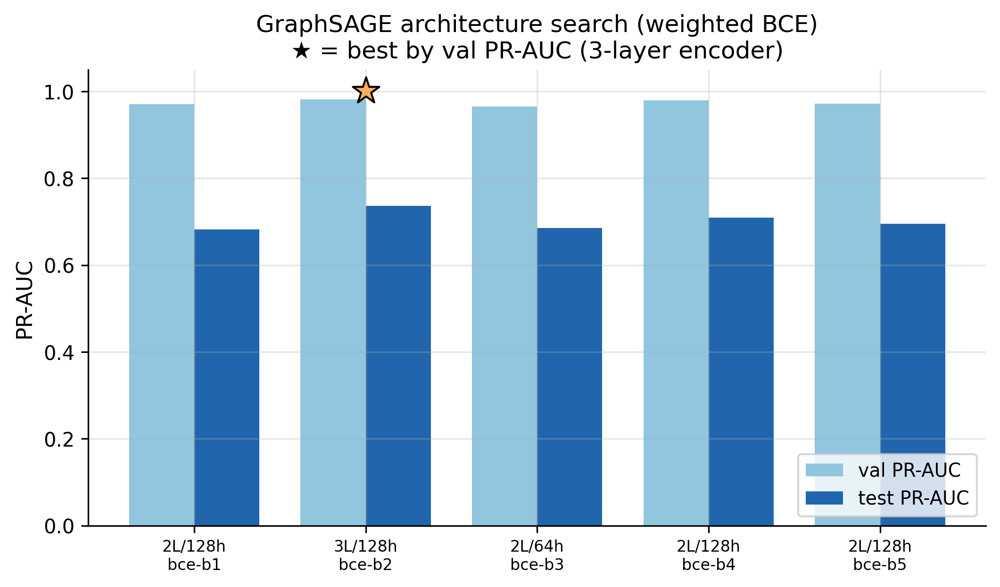
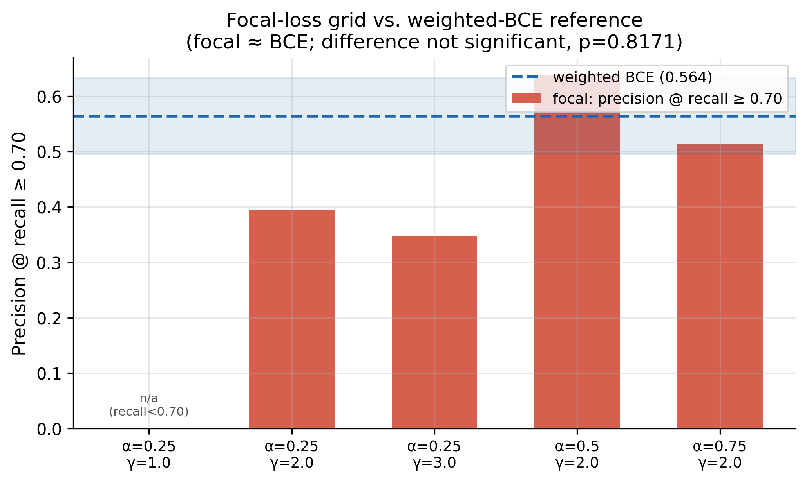
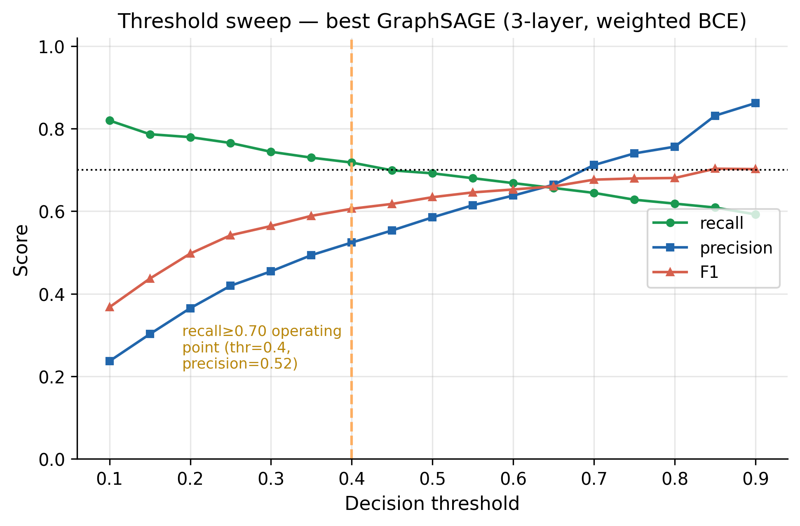

Anti-Money-Laundering · Graph Neural Networks
An inductive GraphSAGE study on SAML-D
Prit Kudale1, Naman Dwivedi2, Raj Dandekar2, Rajat Dandekar2, Sreedath Panat2
1prit.kudale@gmail.com · 2Vizuara AI Labs, hello@vizuara.com
Most fraud-monitoring systems score each transaction on its own. But laundering is a relational, multi-hop phenomenon — money is moved, split, and merged across many accounts. We instead treat the entire payment network as a graph and let an inductive GraphSAGE model read the connections between accounts. On SAML-D (9.5 million transactions, only 0.1% laundering), this relational view more than doubles detection quality (PR-AUC 0.74 vs 0.29) and flags ~6× more true laundering at the same alert budget than a strong gradient-boosted-tree baseline. A second finding: the fashionable focal loss makes no real difference here — the structure is the win, not the loss function. And the whole study ran for under a dollar on one L4 GPU.

Money laundering is a relational, multi-hop phenomenon, yet most transaction-monitoring systems score transactions independently. We model SAML-D (9.5M transactions, 0.104% laundering) as a directed graph in which nodes are accounts and edges are transactions, undersample the majority class to a 247,247-edge subset (3.99% positive), and train an inductive GraphSAGE-mean encoder with learned categorical embeddings and an edge-MLP head, evaluated on a stratified disjoint-node split where test accounts are unseen during training. We benchmark against XGBoost on identical features, take recall (≥ 0.70) as the primary, regulator-relevant metric, and compare focal loss against weighted cross-entropy. GraphSAGE decisively outperforms XGBoost: test PR-AUC 0.741 ± 0.013 versus 0.288 ± 0.006 and roughly 6× higher precision (0.564 vs 0.089) at recall ≥ 0.70 (Welch t-test p < 0.001, three seeds). Focal loss, however, is statistically on par with weighted cross-entropy (PR-AUC 0.736 vs 0.741, p = 0.63). Relational structure, not the loss function, is the decisive lever — and the whole study runs in under one dollar on a single L4 GPU.
Launderers rarely move money in a single suspicious-looking transaction. They use typologies — recognizable shapes in the transaction network: fan-out (one account spraying to many), fan-in (many funneling into one), layering cycles, and scatter-gather chains. These are multi-hop structural patterns. A model that looks at each transaction in isolation — no matter how good its features — is structurally blind to them. A graph model that aggregates information from an account's neighborhood can see the shape.


We turn the raw transaction log into a directed graph: every account is a node, every transaction is an edge, and the task is to classify each edge as laundering or not. An inductive GraphSAGE-mean encoder learns a representation of each account by repeatedly averaging information from its neighbors; because it learns an aggregation function rather than a fixed per-account vector, it generalizes to accounts it has never seen — exactly the situation a real bank faces as new customers arrive. An edge-MLP head then takes the sender and receiver embeddings, concatenates them with learned embeddings of the categorical fields (currencies, bank locations, payment type) and the numeric/temporal features, and predicts P(is_laundering).
Only 0.1% of transactions launder. We undersample the majority class to a 247k-edge subset (~4% positive) and compare weighted cross-entropy vs focal loss.
A missed launderer is the costly error, so we tune the decision threshold post-hoc to hold recall ≥ 0.70 and report precision there.
A disjoint-node split: train and test accounts never overlap, so the test truly measures inductive generalization, not memorization.

| Model | PR-AUC | ROC-AUC | Precision @ recall≥0.70 | F1 |
|---|---|---|---|---|
| XGBoost (tabular) | 0.288 | 0.791 | 0.089 | 0.159 |
| GraphSAGE + weighted BCE | 0.741 | 0.934 | 0.564 | 0.627 |
| GraphSAGE + Focal (α=0.5, γ=2) | 0.736 | 0.925 | 0.578 | 0.635 |
Disjoint-node test set, mean over seeds. GraphSAGE vs XGBoost PR-AUC: p < 0.001. Focal vs weighted BCE: not significant (p = 0.63).
Graph structure is the decisive lever. GraphSAGE roughly doubles PR-AUC over XGBoost and, at the regulator-relevant operating point of recall ≥ 0.70, delivers about 6× the precision (0.56 vs 0.089) — meaning far fewer false alarms for the same coverage of real laundering. The gap is large and statistically significant across three seeds (Welch t-test, p < 0.001).
Focal loss does not help here. Despite its popularity for imbalance, focal loss is statistically indistinguishable from weighted cross-entropy on this task (PR-AUC 0.736 vs 0.741, p = 0.63). Once the data is modeled as a graph, the loss function is a second-order detail.
Depth matters because motifs are multi-hop. A 3-layer encoder was best in the architecture search — consistent with laundering patterns that span several hops of the transaction network.





Modeling transactions as a graph and using an inductive GNN more than doubles money-laundering detection quality (PR-AUC 0.74 vs 0.29) over a strong XGBoost baseline on identical features.
At a fixed, regulator-relevant recall ≥ 0.70, GraphSAGE yields ~6× the precision — dramatically fewer false alerts for the same laundering coverage.
Focal loss is not the lever. It is statistically on par with weighted cross-entropy (p = 0.63); the relational structure is what wins.
A credible, reproducible AML-GNN benchmark — multi-seed, disjoint-node, significance-tested — fits in under $1 on a single L4 GPU (15 runs, logged to an append-only ledger).
This study uses a single synthetic dataset (SAML-D), whose explicitly-generated typologies may favor structural models more than messy real data would; it evaluates one GNN family (GraphSAGE-mean, with GAT excluded after prior negative results) on a 2.5% undersampled subgraph rather than the full graph, and does not model transaction time dynamically. Natural next steps: validation on real or other benchmarks (AMLworld, Elliptic), dynamic/temporal GNNs, richer aggregators (e.g. PNA), and full-graph mini-batch training. We report point estimates over three seeds with significance tests, not exhaustive confidence intervals.
@misc{kudale2026graphsageaml,
title = {Graph Structure Beats Tabular Boosting for Money-Laundering Detection:
An Inductive GraphSAGE Study on SAML-D},
author = {Kudale, Prit and Dwivedi, Naman and Dandekar, Raj and
Dandekar, Rajat and Panat, Sreedath},
year = {2026},
note = {Vizuara AI Labs}
}